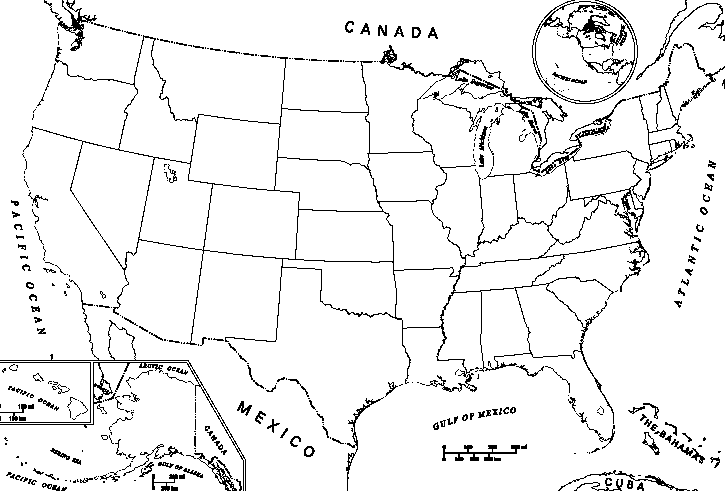

Directions: The table below lists ten places Theodore Roosevelt protected between 1902 and 1909. Plot each one on the map: write its number inside the correct state, then write the category code next to it. Codes: NF national forest, NP national park, NM national monument, BR bird reservation, GP game preserve.
| # | Place | State | Year | Category |
|---|---|---|---|---|
| 1 | Pelican Island | Florida | 1903 | Bird reservation |
| 2 | Crater Lake | Oregon | 1902 | National park |
| 3 | Devils Tower | Wyoming | 1906 | National monument |
| 4 | Mesa Verde | Colorado | 1906 | National park |
| 5 | Wichita Mountains | Oklahoma | 1905 | Game preserve |
| 6 | Grand Canyon | Arizona | 1908 | National monument |
| 7 | Muir Woods | California | 1908 | National monument |
| 8 | Coconino Forest | Arizona | 1908 | National forest |
| 9 | Superior Forest | Minnesota | 1909 | National forest |
| 10 | Mount Olympus | Washington | 1909 | National monument |

Site 1 note: Pelican Island was a nesting rookery where plume hunters were killing egrets and herons for the feather trade. Roosevelt made it the first federal bird reservation in 1903.
1. Count your plotted sites by region. How many of the ten are west of the Mississippi River? Why did so much of Roosevelt's conservation land lie in the West? (Think about who still owned land there in 1900.)
2. Pelican Island, site 1, breaks the western pattern. Why did the first bird reservation appear on a small Florida island instead? What was being protected there?
3. Four of the ten sites are national monuments, the category Roosevelt could create alone under the Antiquities Act. Why would a president prefer a tool that does not require Congress? Name one risk of that tool.
4. Gifford Pinchot called conservation "the greatest good, for the greatest number, for the longest time." Look at your map and the category codes. Write one paragraph arguing whether this map shows conservation as Pinchot defined it, as John Muir's preservation would define it, or as a mixture.
Map check. Numbers and codes must sit inside the correct states: 1 Florida BR, 2 Oregon NP, 3 Wyoming NM, 4 Colorado NP, 5 Oklahoma GP, 6 Arizona NM, 7 California NM, 8 Arizona NF, 9 Minnesota NF, 10 Washington NM. Arizona is the only state with two sites (6 and 8); accept both numbers anywhere inside Arizona.
1. Eight of the ten (all except Pelican Island, Florida, and Superior Forest, Minnesota). The federal government still owned most western land in 1900; eastern land had long passed into private hands, so a president could reserve western land by proclamation while eastern land had to be bought back.
2. Pelican Island was a rookery where plume hunters were slaughtering egrets and herons for the hat trade. It became the first federal bird reservation in 1903, protected because the birds, and the island, were being destroyed immediately, not because the land was a western reserve.
3. Speed and certainty: monuments required no votes, no committees, and no negotiation with members protecting local timber or mining interests. The risk is the mirror image: one person can bind millions of acres without public debate, and a later president can try to undo it the same way.
4. Strong answers call it a mixture leaning Pinchot: the two national forests and the game preserve are managed-use lands by design, while the parks and monuments protect scenery and habitat closer to Muir's preservation. Credit answers that use at least two plotted sites as evidence.